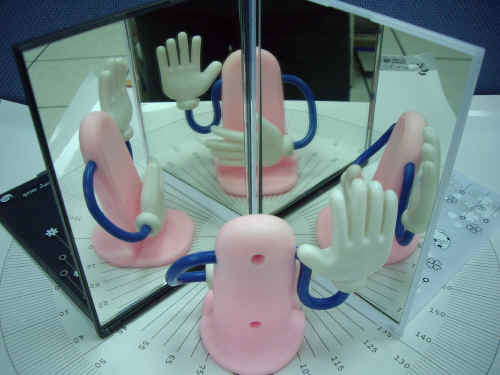

雙鏡成多像
↑雙鏡成多像。
兩個平面鏡夾90度，試問站在兩鏡中間的人可以看到幾個像？
這是一個參考書裡常見的考題，每次說明時，都覺得講一百句話不如看一眼。
上面的動畫中，你可以調整鏡子所夾的角度，物體與眼睛的位置，將滑鼠移到像的位置，還可看到光是如何打進眼睛的。
也可以打開3D圖，看看實際的成像情形，但這也許會耗掉你許多的電腦資源。
仔細觀察，你發現了嗎？
反射奇數次的影像會左右相反，反射偶數次的則不會。
試試看，你還能發現哪些以前不曾注意過的現象？
你也可以動動手，拿起兩面鏡子試一試，很有趣喔！

↑兩鏡夾90度。

↑兩鏡夾60度。
檔案下載
[PC exe]